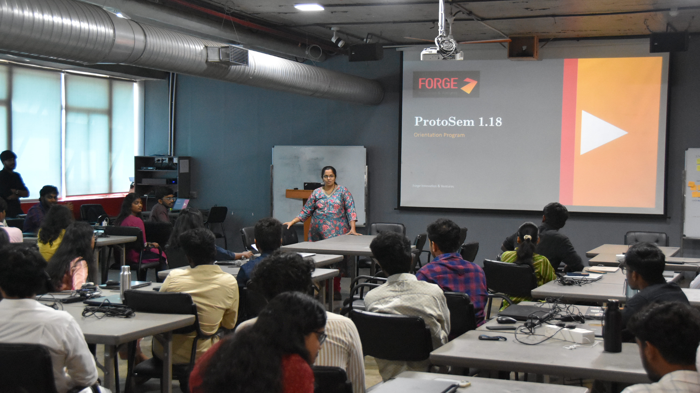
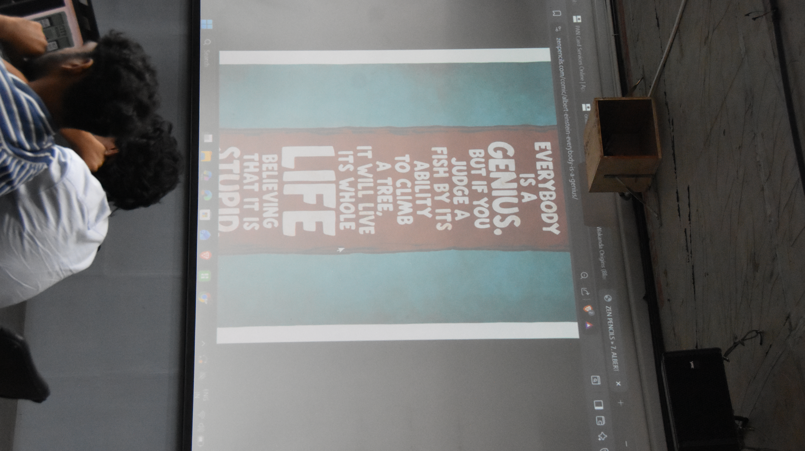
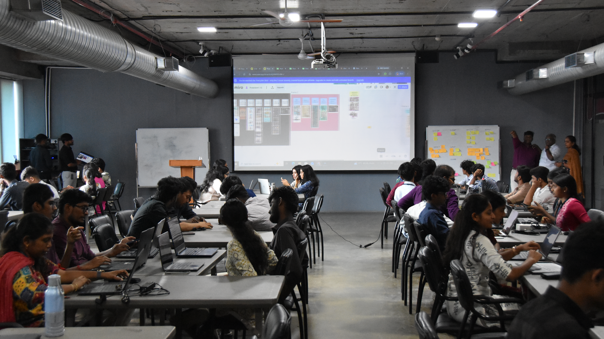
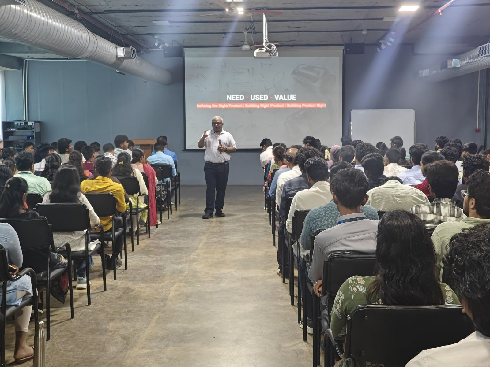
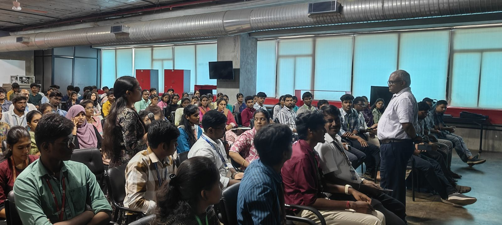

ProtoSem · Week 0
Kickoff & Self-discovery
A week of excitement, teamwork, and personal reflection
Week 0 began with a kickoff meeting that introduced the team and explained the goal of the ProtoSem programme. We were also given an overview of what to expect over the next 20 weeks. The week helped us build confidence, understand the programme direction, and reflect on who we are as individuals and teammates.



.JPG)


The week in focus
From challenge sessions to personal discovery.
01
⚡
Day 1
Mind challenging session / play
- We were excited to begin the tasks and take part in the challenge-based activity.
- The session encouraged quick thinking and active participation.
- It created a fun and energetic start to the programme.
02
↗
Day 2
Introduction to ProtoSem
- We had a session about what ProtoSem is and what we would do over the next 20 weeks.
- The discussion helped us understand the structure and purpose of the programme.
- It gave us a clear direction for the learning journey ahead.
03
◌
Day 3
16 Personalities Test
- We completed the 16Personalities assessment.
- It helped me understand my personality and how I react in different situations.
- The exercise gave useful insight into my strengths and communication style.
04
✎
Day 4
Comic Session
- We had to choose an anime character that reflected our personality or life.
- The activity linked creativity with self-expression and personal insight.
- It was an enjoyable way to present ourselves through storytelling.
05
💼
Day 5
LinkedIn Session
- We explored the importance of LinkedIn as a professional networking tool.
- The session helped us understand how to present ourselves online.
- It was a valuable introduction to professional branding.
- I discovered that I am an INFJ (Advocate) through the 16 Personalities test.
- The result helped me understand my introverted side and my strong desire to help others.
- I connected the comic "The Stonecutter" to my habit of investing deeply in goals and sometimes leaving them before completion.
- The comic served as a reminder to stay focused and keep pushing through challenges.
- Week 0 helped me grow in self-awareness, creativity, teamwork, and motivation.
Growth areas
Skills Developed
CommunicationTeamworkCreativitySelf AwarenessPersonal BrandingProblem SolvingCritical ThinkingReflectionProfessional Networking
← Back to ProtoSem